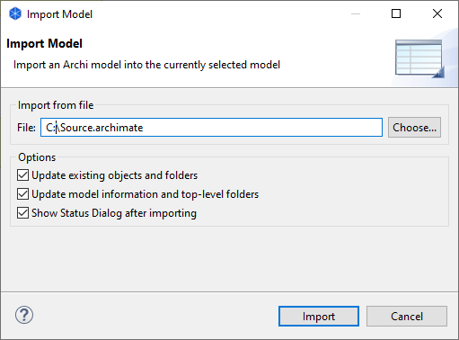

可以将另一个Archi模型导入并合并到当前选定的模型中。然后，您可以将导入的模型作为参考模型进行维护，您可以单独更新并根据需要重新导入。
导入另一个模型时需要考虑的一些事项：
要将另一个Archi模型导入当前选定的模型，请从主“文件”菜单中选择“将Archi模型导入当前选定的模型”。将出现以下对话框：
导入另一个模型
更新现有对象和文件夹
如果选择此项，则导入时将更新任何现有的目标对象和文件夹。
更新模型信息和顶级文件夹
如果选择此选项，则如果模型节点（名称、文档、属性）有任何更改，这些将被更新。如果任何顶级文件夹（文档、属性）发生变化，这些也会被更新。
导入后显示状态对话框
如果选择此项，则在导入模型后会显示一个状态对话框。这将列出更新或更改的内容。